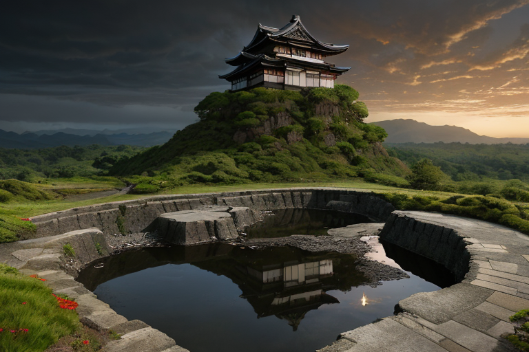
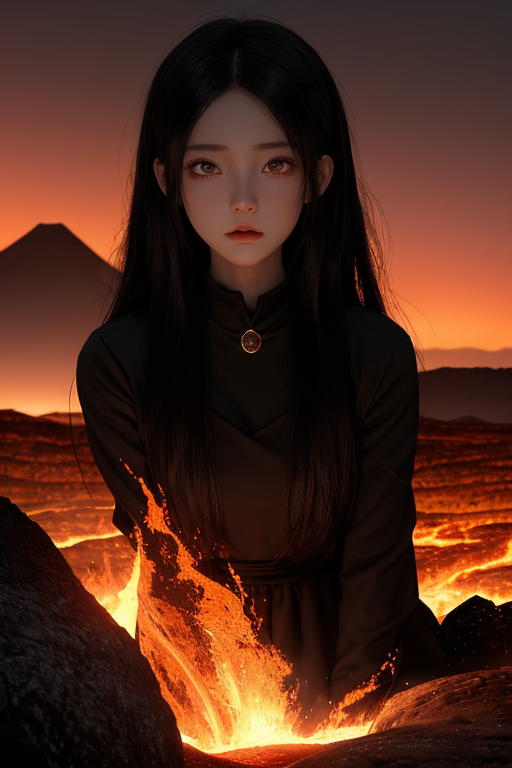
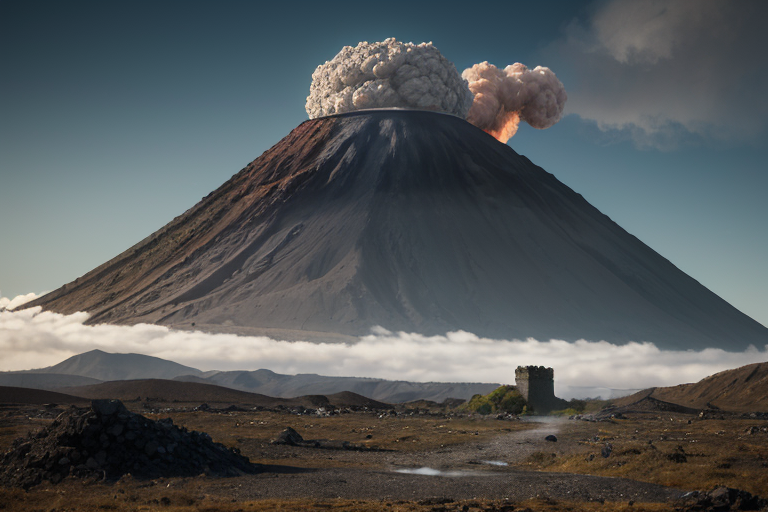
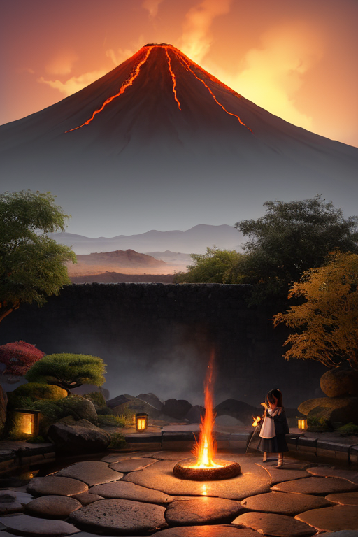

第一章 現実の熊本
あなたはまだ気づいていない。この土地にも、王がいることを。
阿蘇山の外輪山が、巨大な器のように空を切り取る。その内側では、今も白い噴気がゆらりと立ち上り、大地の鼓動を告げている。境界線——火山境に位置するこの地は、常に「内」と「外」の狭間にあった。豊かな草原を育む恵みも、突如として牙を剥く脅威も、同じ地脈から湧き出る。
熊本城の石垣は、2016年の震災で深く傷ついた。加藤清正が築いた堅牢な城郭も、自然の前では無力に見えた。崩れ落ちた石の一つ一つが、あまりに重い現実を語る。観光客の笑い声が響く水前寺成趣園の池面も、ふと暗雲が過ぎれば、微かに波紋を立てる。
この土地の質感は複雑だ。馬刺しの鮮烈な味わい、からし蓮根の鼻腔を衝く辛さ。それは、平穏と脅威が表裏一体であることの、味覚による証明のようでもある。
王は、その石垣の影に立っていた。赤と黒の紋章が、かすかに脈打つ。彼は何も消せない。ただ、次の歪みが来る時、ほんの少し、その衝撃を分散させ、崩壊の速度を遅らせることしかできない。問いは常にそこにある。崩れても、立てるか？

第二章 歪みの兆候
阿蘇山の外輪山が、夕日に赤黒く染まる頃、地中からの微かな軋みが王を呼び寄せた。火山境の世界線は、常に外部からの圧力に揺さぶられていた。遠くの海溝で生まれた歪みが、地脈を伝い、この火の国へと流れ込んでくる。
ヴァルニアが王の肩に舞い降りた。「主君、圧力が増しています。外輪山の西側、特に…」
「城下か」王の声は低く、岩を砕くような重みがあった。彼の目には、石垣が崩れ、炎が街を舐めたあの日の記憶がよぎる。激情は内側で滾るが、表面は冷たい溶岩のように静かだ。感情を持たぬはずの存在が、この土地の「哀しみ」という感情密度に侵食され、闘志という形で進化を始めていた。
彼は手を伸ばした。目に見えない地脈の流れに触れ、一点に集中しようとする歪みの力を、阿蘇の広大なカルデラ全体へと分散させていく。完全には消せない。ただ、来るべき衝撃を、ほんの少し、広く薄くするだけだ。
草原を渡る風が、突然、熱を帯びた。

第三章 王の葛藤
阿蘇山の噴気口から立ち上る白い蒸気は、今日も変わらず空に溶けていた。ヴァルカンはその傍らに立ち、掌で地中の鼓動を感じ取る。絶え間ない微調整。彼の仕事は、巨大な力の奔流を、細かい流れに分け、時には迂回させ、時には地中深くに逃がすことだ。2016年のあの日も、彼は地脈に手を差し伸べていた。石垣が崩れ、瓦が散る音。人間たちの叫び。彼は全力で歪みを分散させた。それでも、城は崩れた。
「なぜ、完全には防げないのか」
その問いは、彼の内側で冷えた溶岩のように固まっていた。感情を持たぬはずの存在が、初めて「無力感」という重いものを知った瞬間だった。彼の闘志は、守れなかったことへの苛立ちとして燃え上がり、やがて静かな自問へと変わっていく。守るとは何か。完全な防御か。それとも、崩れた後に、再び立ち上がるための「間」を作ることか。
彼は黒川温泉の湯煙の向こうに、地震で傷ついた熊本城の石垣を見た。人間たちが一つ一つ、元の位置を探りながら積み直すその手つきに、彼は答えの一端を見た気がした。
第四章 妖精との対話
水前寺成趣園の池面は、地震の揺れでわずかに歪んだまま、静かに空を映していた。ヴァルニアは、苔むした築山の上に座り、熱を帯びた吐息を漏らした。
「王よ、我々は『守る』ことを使命とする。だが、それは『壊れないようにする』こととは違う」
彼女の目は、阿蘇の火口のように深く熱かった。
「この国は歪む。我々はその歪みを、一瞬、ほんの少しだけ和らげる。城が崩れる時、完全に防ぐことはできない。だが、中の人が逃げるための一秒を、石が落ちる方向を、ほんの少しだけ調整することはできる」
彼女は手にした温泉の蒸気を、そっと風に流した。
「崩れること自体は止められない。でもね、王。崩れた後に、人間がもう一度積み始める『その時』まで、地盤が続くように、熱が冷めすぎないように……それが、我々の『守り』なのよ」
彼は黙って聞いた。守るとは、完全な無傷を保つことではなく、再起の可能性を、ほんのわずかな調整によって土地に刻み続けることなのだと。

第五章 微調整と余韻
水前寺成趣園の池面に、一羽の鳥が降り立った。その波紋が、ゆっくりと広がる。
クマモトリア・ヴァルカンは、城下町の路地裏に立っていた。彼の前を、熊本地震で傷ついた古い土蔵を修復する職人たちの一団が通り過ぎる。槌の音、笑い声、そして「太平燕」の屋台から漂うかすかな香り。彼は目を閉じ、地中に流れる微かな熱を感じ取った。それはもう、噴火の兆しではない。人々の営みが生み出す、温かな熱だった。
彼は掌をかざした。通りすがりの老人が躓きそうになった石を、ほんの少しだけ地面にめり込ませた。風向きを変え、黒川温泉から上がる湯気が、疲れた旅人の顔を優しく包むようにした。崩れた石垣の脇で、子供がくまモンの絵を描いている。彼は、その子が落としそうになった赤いクレヨンを、そっと手の届く位置に転がした。
全ては些細なことだ。彼ができるのは、偶然の連鎖をほんのわずかだけ調整し、人がもう一度立ち上がる「きっかけ」が、ほんの少しでも見つけやすくなるようにすることだけである。
彼は振り返らず、ゆっくりと歩き出した。背後の阿蘇の外輪山が、夕日に赤く染まっていた。
あなたの町にも、王がいる。